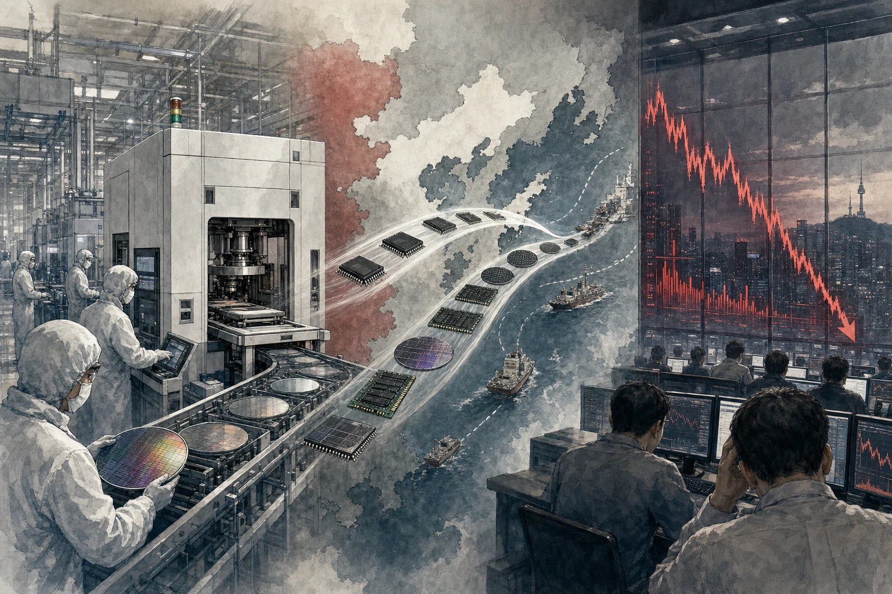
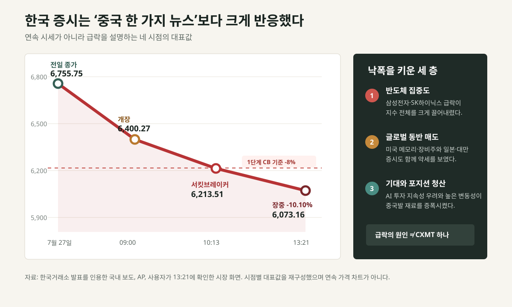
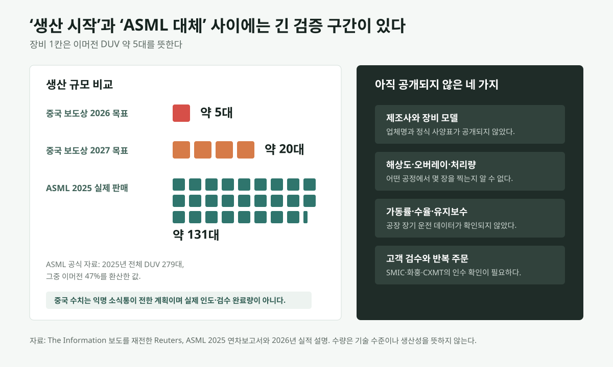
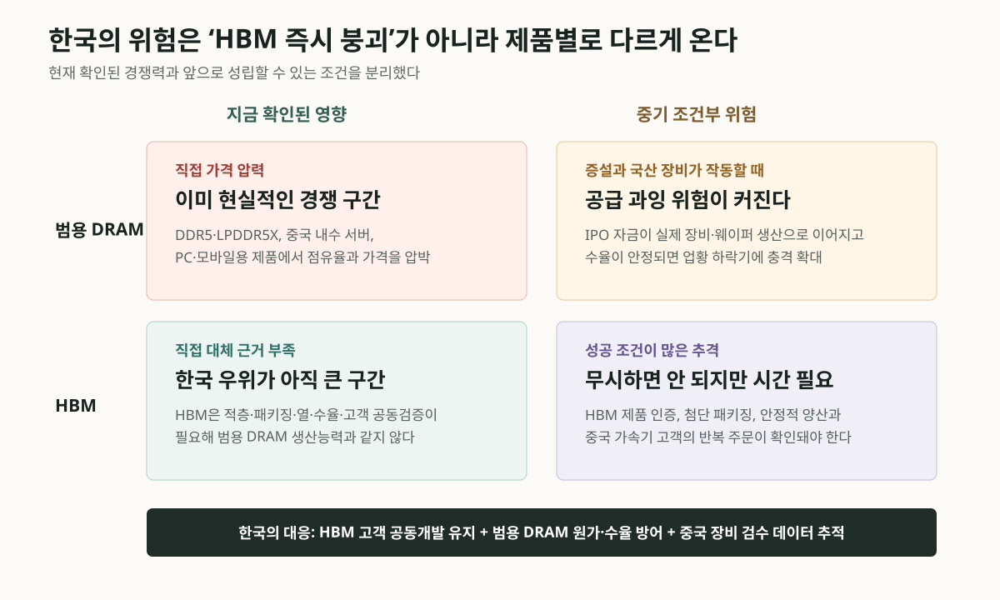

CXMT 상장 열풍, 중국 AI 공급망이 메모리로 이동했다
중국 최대 DRAM 업체로 꼽히는 ChangXin Memory Technologies, 즉 CXMT의 상장 열풍과 중국산 이머전 DUV 노광장비 생산 보도가 7월 28일 한국 증시를 정면으로 때렸다. 코스피는 장중 10% 넘게 밀렸고 삼성전자와 SK하이닉스도 급락했다. 그러나 이것을 “중국이 HBM과 ASML을 곧 따라잡았다”는 한 문장으로 설명하면 사실보다 공포를 크게 쓰게 된다. 중국의 범용 DRAM 증설 위험은 현실적이지만, HBM과 최첨단 노광 기술의 즉시 대체는 아직 확인되지 않았다.
China AI Supply Chain
한국이 피해를 본 것은 맞다. 다만 시장 가격이 기술 증거보다 훨씬 빨리 움직였다
CXMT는 한국 메모리 기업의 범용 DRAM 가격과 중국 내수 점유율을 위협할 수 있다. 반면 보도된 중국 DUV 장비는 제조사명, 정밀도, 처리량, 가동률, 고객 검수 결과가 공개되지 않았고 올해 목표도 약 5대다. 오늘의 폭락은 장기 위험을 선반영한 동시에, 미국 반도체주 약세와 AI 투자 자금조달 우려, 높은 지수 집중도와 포지션 청산이 한꺼번에 겹친 결과로 보는 편이 더 정확하다.

AP는 CXMT가 7월 27일 상하이 STAR Market에 상장했고, 첫날 주가가 466% 상승해 시가총액이 3조3,000억 위안, 약 4,870억 달러를 넘었다고 보도했다. 보도는 이번 상장이 최소 86억 달러를 조달한 대형 IPO였으며, CXMT가 AI 서버와 전자기기에 쓰이는 DRAM을 만드는 중국 대표 메모리 기업이라는 점을 강조했다.
SCMP도 같은 날 CXMT 주가가 상장 첫 거래에서 공모가 8.66위안 대비 472% 뛰었고, 장 초반 시가총액이 3조3,100억 위안 수준으로 올라 중국 본토 상장사 중 가장 큰 기업이 됐다고 전했다. SCMP는 이 상장이 AI가 끌어올린 메모리 호황 속에서 이뤄졌다고 설명했다.
중국 관영 Xinhua 보도는 오전 거래 기준으로 CXMT가 531.06% 상승해 54.65위안을 기록했고, 오전 거래대금만 1,221억 위안에 달했다고 전했다. 같은 사안을 어느 시점에 보느냐에 따라 531%, 472%, 466%라는 숫자가 달라진다. 그래서 이 글에서는 첫날 종가 기준으로 여러 독립 보도가 맞물리는 466% 안팎의 상승을 핵심 수치로 본다.
상장 서류의 핵심은 공모가와 발행 규모다. CXMT의 공모 설명서 공개본은 발행가를 주당 8.66위안으로 제시했고, 신규 A주 66억8,808만8,608주를 처음 발행한다고 설명했다. 상장 공고 공개본은 상장일을 2026년 7월 27일, 종목 코드를 688825로 명시했다.
중국 국가통계국의 같은 날 발표도 중요하다. 국가통계국은 2026년 1~6월 규모 이상 공업기업의 이익 총액이 3조9,479억9,000만 위안으로 전년 동기 대비 18.7% 증가했다고 밝혔다. 이 중 컴퓨터·통신·기타 전자설비 제조업 이익은 96.9% 증가했다.
더 눈에 띄는 설명은 국가통계국 산업사 수석통계사 Yu Weining의 해석이다. 해석 자료는 상반기 인공지능과 각 산업의 융합, 컴퓨팅 수요 증가가 전자 업종 이익을 밀어 올렸다고 설명한다. 서버와 고성능 워크스테이션 관련 컴퓨터 제조 이익은 689.3%, 컴퓨터 주변장치 제조 이익은 305.8% 증가했다고 제시했다.
반도체 쪽 숫자는 더 크다. 같은 해석 자료는 집적회로 제조 업종 이익이 전년 동기 대비 2,579.5% 늘었다고 밝혔다. 이 숫자는 지난해의 낮은 기저와 가격 사이클 회복 영향을 함께 봐야 하지만, 적어도 중국 공식 통계가 AI와 컴퓨팅 수요를 전자·반도체 이익 개선의 핵심 설명으로 내세웠다는 점은 분명하다.
중국 국무원 신문판공실의 7월 15일 자료도 같은 흐름을 보강한다. 중국은 2026년 상반기 집적회로 2,798억 개를 생산해 전년 대비 23.1% 늘었다고 발표했다. 자료는 글로벌 AI 붐, 고성능 컴퓨팅, 메모리칩 수요 증가가 생산 확대를 밀었다고 설명했다.
CXMT 상장을 단순한 주식시장 과열로만 보면 반쪽만 보는 것이다. AI 모델 경쟁이 커질수록 학습과 추론 모두 메모리 병목을 만난다. GPU가 연산을 맡더라도, 대규모 모델의 파라미터, 활성값, 캐시, 학습 데이터, 추론 요청을 처리하려면 DRAM과 고대역폭 메모리, 저장장치가 동시에 필요하다.
다만 CXMT가 곧바로 Samsung Electronics, SK hynix, Micron의 최첨단 HBM 시장을 대체한다는 뜻은 아니다. 여러 독립 보도는 CXMT가 세계 DRAM 시장에서 아직 선두권과 격차가 있고, 미국 수출 통제 때문에 최첨단 장비 접근에도 제약을 받는다고 설명한다. AP는 CXMT가 2026년 초 기준 세계 DRAM 출하에서 한 자릿수 후반대 점유율을 가진 것으로 전했고, 다른 보도들도 대체로 중국 최대이지만 글로벌 선두는 아니라는 평가에 맞춰져 있다.
FT는 CXMT가 상장 첫날 중국에서 가장 가치 있는 상장사로 올라섰고, 상하이 STAR Market의 대형 IPO 기록을 새로 썼다고 보도했다. 동시에 회사가 하이엔드 DRAM과 HBM 개발을 추진하지만, 기술 세대와 장비 제약이라는 현실을 넘어야 한다는 점도 짚었다.
The Verge는 CXMT가 중국 RAM 기업으로서 첫날 약 4,840억 달러 가치에 도달했다고 전했다. 보도는 AI와 일반 전자기기 수요가 메모리 공급처 다변화 압력을 키우고 있지만, CXMT 제품이 최상위 경쟁사보다 한 세대 뒤처져 있다는 평가도 함께 소개했다. 이 부분은 중국 AI 공급망의 기대와 한계를 동시에 보여 준다.
상장 열기가 큰 이유는 중국의 자립 서사와 맞물린다. 미국의 첨단 칩·장비 통제는 중국 AI 기업이 NVIDIA GPU에 의존하기 어렵게 만들었다. 이 상황에서 중국은 모델 효율, 국산 가속기, 데이터센터 클러스터, 메모리와 네트워크 장비를 묶어 자체 생태계를 키우려 한다. CXMT는 그 생태계에서 “메모리 국산화”의 대표주자로 읽힌다.
그러나 투자 열기가 곧 기술 우위를 의미하지는 않는다. DRAM은 경기 순환이 심한 산업이고, AI 서버 수요가 강해도 모바일, PC, 일반 서버 수요가 꺾이면 가격이 흔들릴 수 있다. 공모주 유통 물량이 제한적이면 첫날 주가가 더 크게 튈 수도 있다. 첫날 시가총액은 산업 기대를 보여 주지만, 장기 경쟁력은 수율, 제품 세대, 고객 인증, 장비 접근성, 현금흐름으로 다시 검증된다.
국가통계국 수치도 같은 방식으로 읽어야 한다. 집적회로 제조 이익 2,579.5% 증가는 강한 신호지만, 지난해 손실 또는 낮은 이익에서 회복하면 증가율이 과장되어 보일 수 있다. 실제 산업 체력을 보려면 매출, 영업이익률, 재고, 가격, 설비투자, 고객 믹스를 함께 봐야 한다.
7월 28일 서울에서 실제로 일어난 일
한국 시장의 충격은 화면 착시가 아니었다. AP는 이날 코스피가 장중 10% 넘게 하락했다고 전했다. 사용자가 오후 1시 21분에 확인한 시장 화면도 전일 종가 6,755.75에서 6,073.16으로 10.10% 밀린 상태를 보여 줬다. 오전 10시 13분에는 지수가 6,213.51, 전일 대비 -8.02%를 기록하면서 1단계 서킷브레이커가 발동됐다. 한국거래소 제도상 코스피가 전일 종가보다 8% 이상 하락한 상태가 1분간 이어지면 시장 전체 거래가 20분간 멈춘다.
반도체 대형주가 낙폭을 키웠다. Reuters는 삼성전자와 SK하이닉스가 장중 각각 최대 9.5%, 10.9% 하락했다고 보도했다. 기사에 인용된 시장 관계자는 CXMT의 현재 이익보다 IPO 자금으로 증설과 기술 개발이 빨라질 가능성을 더 큰 우려로 봤다. 즉 오늘 가격은 현재의 제품 격차보다 미래의 자본 투입을 먼저 할인했다.
그렇다고 CXMT 하나가 코스피 하락을 모두 만들었다고 보기도 어렵다. 전날 미국 시장에서 메모리와 장비주가 먼저 하락했고, NVIDIA를 포함한 AI 인프라 투자의 자금조달 지속성에 대한 우려도 겹쳤다. AP 보도에서 일본 닛케이는 약 3%, 대만 자취안지수는 약 3.8% 하락했다. 한국의 낙폭이 더 컸던 것은 삼성전자와 SK하이닉스의 지수 영향력이 크고, 이미 변동성이 높아진 시장에서 외국인·프로그램 매도가 집중됐기 때문이다.

중국 DUV는 중요한 진전이지만, 아직 ASML 대체 증거는 아니다
이번 급락의 두 번째 불씨는 The Information 보도였다. 익명의 소식통 두 명은 상하이의 한 국유 지원 업체가 이머전 DUV 장비 생산을 시작했으며 2026년 약 5대, 2027년 약 20대를 만들 계획이라고 전했다. 첫 장비는 SMIC, 화훙반도체, CXMT 등에 공급될 예정이라는 내용도 포함됐다. Reuters는 이 내용을 재전했지만 독립적으로 장비 성능이나 고객 인수를 확인했다고 밝히지는 않았다.
사용자가 보내 준 이데일리 기사도 ASML이 장중 최대 8.3% 급락했다고 전하면서 “생산은 아직 초기 단계”라고 명시했다. 제조사 이름은 공개되지 않았고, 장비의 해상도와 오버레이 정확도, 시간당 웨이퍼 처리량, 가동률, 수율, 유지보수 체계도 알려지지 않았다. 따라서 지금 확정할 수 있는 핵심은 “중국이 이머전 DUV의 소량 생산 단계에 들어갔다는 보도가 나왔다”까지다.
DUV는 낡아서 쓸모없는 장비가 아니다. 이머전 DUV는 여전히 다양한 반도체 공정의 주력 장비이고, 같은 웨이퍼를 여러 번 노광하는 다중 패터닝을 쓰면 더 미세한 공정에도 접근할 수 있다. 그러나 노광 횟수가 늘수록 공정 단계, 비용, 결함 위험과 생산 시간이 커진다. 장비 한 대가 패턴을 찍었다는 사실과 수십 대가 높은 가동률로 동일한 품질의 웨이퍼를 계속 생산한다는 사실은 전혀 다른 검증 단계다.
규모 차이도 봐야 한다. ASML의 2025년 연차보고서는 전체 DUV 279대를 판매했고 그중 47%가 이머전 장비였다고 밝혔다. 환산하면 약 131대다. 중국 업체의 내년 목표 20대가 모두 생산되고 고객 검수까지 통과해도 ASML의 최근 연간 이머전 판매량보다 훨씬 작다. 반대로 중국에는 소량이라도 국산 공급선을 확보하는 것 자체가 수출통제의 병목을 느슨하게 만드는 전략적 의미가 있다.

중국·해외·한국은 같은 뉴스를 다르게 본다
중국의 시선에서 CXMT 상장과 DUV 생산 보도는 하나의 이야기다. 메모리 회사가 대규모 자본을 확보하고, 그 회사가 필요로 하는 핵심 장비도 자국 공급망에서 만들기 시작했다는 자립 서사다. 중국 금융매체 제일재경은 상장 다음 날 CXMT를 포함한 중국 기술주도 약세로 출발했다고 전했다. 중국 내부에서도 첫날의 466% 상승을 곧바로 안정된 기업가치로 받아들이는 것은 아니다.
해외 투자자의 시선은 두 갈래다. 하나는 ASML의 중국 DUV 매출과 장기 시장지위가 약해질 수 있다는 우려다. 다른 하나는 AI 인프라 투자와 메모리 가격 상승에 너무 많은 기대가 반영돼 있어 새로운 악재가 포지션 청산의 방아쇠가 됐다는 해석이다. ASML 주가의 8%대 장중 하락은 중국 장비의 기술 수준이 8%만큼 ASML에 가까워졌다는 뜻이 아니라, 미래 중국 매출의 불확실성을 하루 만에 크게 다시 가격에 넣었다는 뜻에 가깝다.
한국의 시선에서는 범용 DRAM과 HBM을 분리해야 한다. CXMT가 DDR5, LPDDR5X와 중국 서버용 DRAM을 늘리면 삼성전자와 SK하이닉스의 범용 제품 가격과 중국 고객 점유율에는 실제 압력이 생긴다. 특히 메모리 하락 사이클에서 중국의 신규 공급이 겹치면 한국 기업의 이익 변동성이 커질 수 있다. 이 부분은 애국심으로 부정할 문제가 아니다.
반면 HBM은 웨이퍼 생산능력만으로 완성되지 않는다. 적층, 본딩, 열 관리, 첨단 패키징, 수율, 가속기 업체와의 공동 설계, 장기간 고객 인증이 함께 필요하다. CXMT가 HBM 개발을 추진한다는 보도는 많지만, 상장 서류에서 대규모 HBM 투자와 확정 고객 계약이 뚜렷하게 확인되지 않았다는 국내 보도도 있다. 오늘 확인된 DUV 소량 생산 계획만으로 한국의 HBM 우위가 무너졌다고 결론 내릴 근거는 부족하다.
| 쟁점 | 확인된 사실 | 아직 확인되지 않은 것 |
|---|---|---|
| CXMT 상장 | 최소 86억 달러 조달, 첫날 종가 기준 466% 안팎 상승 | IPO 자금의 실제 증설 속도와 장기 수익성 |
| 중국 이머전 DUV | 익명 소식통 기반으로 2026년 5대·2027년 20대 생산 목표 보도 | 제조사, 사양, 처리량, 가동률, 고객 검수 결과 |
| ASML 충격 | 보도 직후 장중 최대 8.3% 하락 | 중국 장비가 ASML과 같은 생산성을 냈다는 증거 |
| 한국 증시 | 코스피 장중 10% 이상 하락, 1단계 서킷브레이커 발동 | CXMT·DUV가 전체 낙폭에서 차지한 정확한 비중 |
| HBM 경쟁 | CXMT가 개발을 추진하고 범용 DRAM 생산능력을 확대 | 선두 제품 수준의 HBM 대량양산과 반복 고객 주문 |

그래서 “한국이 이렇게 피해를 보는 게 맞느냐”는 질문에는 두 답이 동시에 성립한다. 주가 기준으로 한국이 실제 피해를 본 것은 맞다. 삼성전자와 SK하이닉스가 코스피에서 차지하는 비중이 크고, 중국의 범용 DRAM 증설은 두 회사의 미래 이익에 직접 연결되는 위험이기 때문이다. 다만 하루 10%가 넘는 지수 하락이 중국 기술의 하루치 진보를 정확히 반영했다고 보기는 어렵다.
“호들갑인가”라는 질문에는 단기는 과도하고 장기는 무시할 수 없다는 답이 가장 가깝다. 5대 생산 목표와 미공개 성능만으로 ASML의 장벽이 무너졌다고 보는 것은 과장이다. 하지만 중국이 장비를 완성해 고객 공장에 넣고, 고장이 나도 자체 부품과 서비스로 계속 돌리는 단계에 도달하면 수출통제의 효과와 글로벌 장비 시장의 구조가 달라진다. 지금은 그 첫 관문을 통과했다는 보도이지 마지막 관문을 통과했다는 확인이 아니다.
한국인이라서 중국의 성과를 믿기 싫은 것 아니냐는 의심도 데이터로 정리할 수 있다. 중국의 자본력, 범용 DRAM 점유율 상승, 국산 장비 추진은 인정해야 한다. 동시에 익명 보도, 소량 목표, 미공개 사양, HBM 고객 인증 부재도 같은 무게로 써야 한다. 어느 한쪽만 빼면 애국적 낙관이나 중국발 공포 마케팅이 된다.
개발자와 AI 서비스 기업에는 다른 면도 있다. 범용 메모리 공급이 늘면 서버 DRAM과 저장장치 비용이 낮아져 오픈웨이트 모델 운영과 장문 추론 서비스의 경제성이 좋아질 수 있다. 반면 미국이 중국 메모리와 장비를 국가안보 문제로 더 강하게 묶으면 공급망 선택, 서비스 유지보수, 제재 준수 비용은 오히려 커질 수 있다.
앞으로 확인할 첫 번째 지표는 CXMT의 상장 후 실적이다. 공모 설명서가 제시한 성장 전망이 실제 매출과 이익으로 이어지는지, 그리고 DRAM 가격 사이클이 꺾였을 때도 수익성을 지킬 수 있는지가 중요하다. 두 번째는 HBM과 고성능 서버 메모리 로드맵이다. AI 서버 시장은 범용 DRAM만으로 설명되지 않는다.
세 번째는 중국 공식 통계의 다음 분기 변화다. 2,579.5% 같은 숫자가 한 번의 기저효과인지, AI 서버와 전자장비 수요가 실제로 여러 분기 동안 이익을 밀어 올리는지 봐야 한다. 네 번째는 미국과 동맹국의 정책 대응이다. CXMT가 글로벌 공급망에서 더 커질수록 메모리도 GPU 못지않게 규제 논쟁의 대상이 될 수 있다.
내 결론은 이렇다. CXMT 상장과 DUV 보도는 중국 AI 산업이 모델 데모를 넘어 자본, 메모리, 제조장비를 하나의 공급망으로 묶기 시작했다는 강한 신호다. 범용 DRAM에서 한국 기업이 받는 장기 압력은 실제다. 그러나 미확인 장비 5대 계획을 HBM과 ASML의 즉시 몰락으로 번역한 오늘의 가격 반응은 현재 공개된 기술 증거보다 앞서 나갔다.
앞으로 판단을 바꿀 지표는 명확하다. 중국산 이머전 DUV의 정식 제조사와 사양, SMIC·화훙·CXMT의 검수 완료, 실제 웨이퍼 처리량과 가동률, CXMT의 IPO 자금 집행, 범용 DRAM 가격, HBM 고객 인증을 차례로 확인해야 한다. 이 지표가 붙으면 오늘의 공포는 선견지명이 되고, 붙지 않으면 과도한 포지션 청산으로 남는다.
출처와 더 읽을 자료
- AP: China memory chipmaker CXMT's shares soar in Shanghai listing
- SCMP: CXMT shares rise on STAR Market debut
- Xinhua via China.org.cn: CXMT surges on STAR Market debut
- CXMT prospectus disclosure copy via Sina Finance
- CXMT STAR Market listing announcement disclosure copy
- National Bureau of Statistics of China: H1 2026 industrial profits
- National Bureau of Statistics of China: interpretation of H1 industrial profits
- State Council Information Office: China's integrated circuit output rises 23.1% in H1
- Financial Times: Chinese chip champion CXMT soars in market debut
- The Verge: Chinese RAM company CXMT makes a stock market debut
- AP: South Korea's Kospi sinks more than 10% on chip selling
- Reuters: Samsung and SK hynix slide amid financing and China concerns
- Korea Exchange: stock-market circuit breaker rules
- The Information: China starts producing homegrown immersion DUV tools
- Reuters: China begins making homegrown DUV tools, citing The Information
- 이데일리: 중국 DUV 자체 생산설에 ASML 장중 8%대 급락
- ASML 2025 Annual Report: DUV system sales
- 제일재경: CXMT 상장 다음 날 중국 기술주 동향
- 조선비즈: CXMT 상장 서류와 HBM 투자 계획의 한계